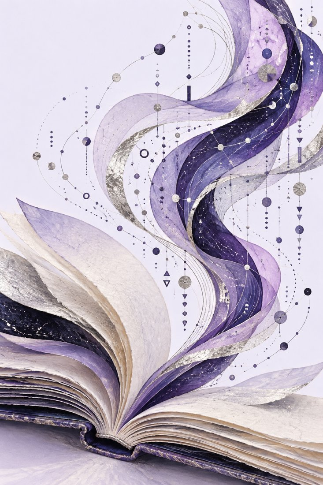

講師 / SPEAKER
マーク・トゥーリン
Mark Turin
ブリティッシュ・コロンビア大学 准教授
Associate Professor, University of British Columbia
講演詳細
- 日付
- 2026年11月6日（金）
- 時間
- 16:45–18:00（日本時間）
- 会場
- 筑波大学 中央図書館集会室
- 形式
- 対面＋オンライン
- 言語
- 英語
講演について
先住民言語コミュニティとの協働を踏まえ、UnicodeからAIまでの技術と、言語の未来を支えるデジタル基盤について考えます。誰が基盤を築き、誰の知識が反映されるのかという問いを中心に、コミュニティの主体性と言語の再活性化を取り上げます。
Lecture details
- Date
- Friday, November 6, 2026
- Time
- 16:45–18:00 JST
- Venue
- Central Library Meeting Room, University of Tsukuba
- Format
- In person & online
- Language
- English
About the lecture
A lecture on Indigenous language revitalization, digital infrastructure, and the questions of knowledge and agency raised by technologies from Unicode to AI.
How to participate
Online participation is available.
Please contact So Miyagawa for online access details.

言語の未来とデジタル技術
Language futures & digital technologies
先住民言語UnicodeAI言語の再活性化